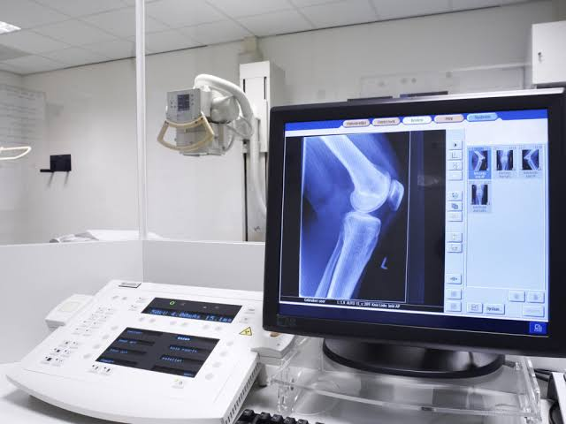

This website is about my career goals in the radiologic technology field.
I like being able to contribute to a patient's journey to be diagnosed. I like the idea of working in different modalities, so if I ever get burnt out on one, I can switch to another to keep things fresh. When I was in high school, I had to have X-rays done for my broken arm. I thought my tech was very nice and efficient; she inspired me to take on the career path. Also, when I shadowed a rad tech in a hospital, I loved the environment and how active and fast paced things were. Additionally, I was always fascinated by medical technology, X-ray most of all, and how this technology is constantly changing to improve efficiency and accessibility.
Learn how to use:
| Year | Career Goal | Steps |
|---|---|---|
| 2028 | Graduate RAD program | ARRT Certification |
| 2029 | Employed Radiographer | Obtain state licensure and apply to hospitals |
| 2029 | Cross train in CT/MRI | Pass ARRT MRI/CT exam |
| 2032 | Clinical instructor | Apply to universities for the role |
